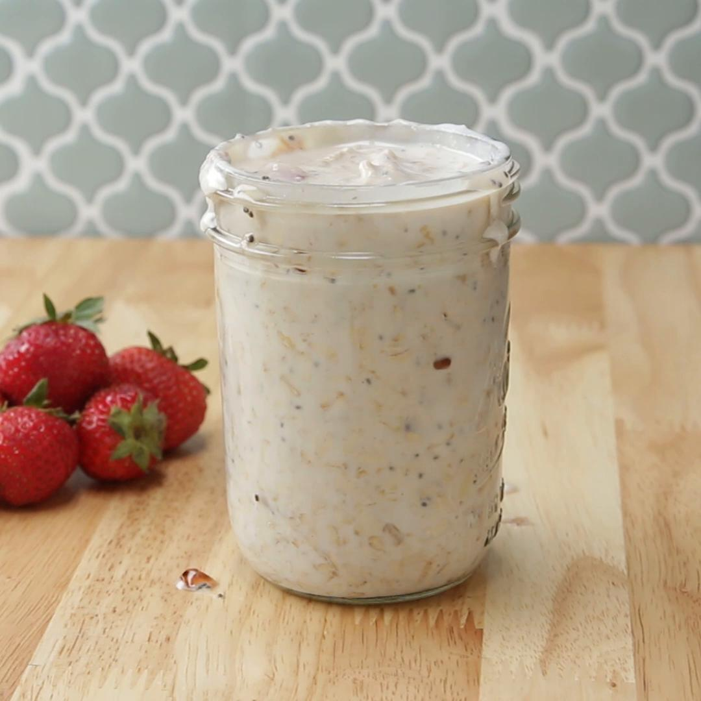

PB&J Overnight Oats

Description
Oats that are PB&J'd and then overnighted
Ingredients
- 1/3 cup rolled oats
- 1/3 cup milk of your choice
- 1/4 cup vanilla greek yoghurt
- 1/2 tbsp strawberry jam
- 1 1/2 tbsp nut butter
- 1/4 vanilla extract
- 1/2 tsp chia seeds (optional)
- strawberries, quartered
Steps
- Mix all ingredients together
- Leave overnight (up to 5 days)